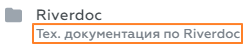
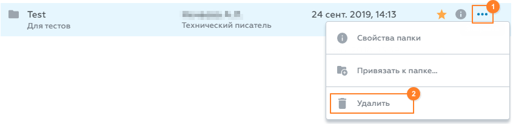
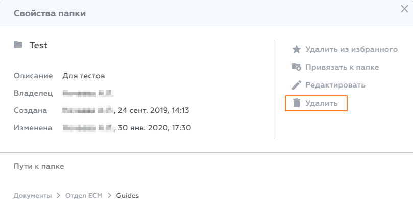

Создание папки
Правила создания папки
▪В корне раздела Документы объекты может создавать только администратор из Консоли администрирования.
▪На папку, в которой планируете создать объект, должно быть право доступа как минимум "Перезапись версий" (Write).
▪При создании объекта в папке, которая связана с другими папками, объект автоматически будет создан во всех связанных папках.
Как создать папку
Чтобы создать папку в Riverdoc:
1.В разделе Документы перейдите в директорию, в которой хотите создать папку и для которой есть права на создание нового документа.
2.Нажмите Создать → Создать папку.
3.В открывшемся окне Новая папка заполните поля:
•Имя папки* – название папки. Допустимы любые буквы и символы. Имя папки не может быть пустым.
•Описание папки – комментарий к папке, который в дальнейшем будет отображаться под названием папки в списке документов:

Заполнять поле Описание папки не обязательно, но в дальнейшем заполненный комментарий поможет, например, ориентироваться в результатах поиска по названию папки.
4.Нажмите Создать.
В результате система проверит право доступа пользователя к выбранной папке и, если оно не ниже "Перезапись версий" (Write), создаст папку в выбранной директории. Если прав не хватает, обратитесь к администратору системы.
 Примечание. В одной директории невозможно создать две папки с одинаковыми названиями.
Примечание. В одной директории невозможно создать две папки с одинаковыми названиями.
Редактирование атрибутов папки
В Riverdoc можно отредактировать название папки и описание к папке. Для этого в свойствах папки () нажмите Редактировать, в открывшемся окне внесите правки и сохраните изменения.
Свойства папки. Редактирование атрибутов
Удаление папки
Правила удаления папки
▪Минимальное право доступа, необходимое для удаления объекта:
o"Удаление" (Delete) – на объект, который пользователь хочет удалить.
o"Создание версий" (Version) – на все папки, с которыми связан удаляемый объект.
▪Невозможно удалить непустую папку.
Удалить папку можно одним из следующих способов: •в списке документов: меню→ Удалить.  Как удалить папку в списке документов •в свойствах папки (): команда  Как удалить папку в окне свойств |
См. также
Как добавить папку в избранное